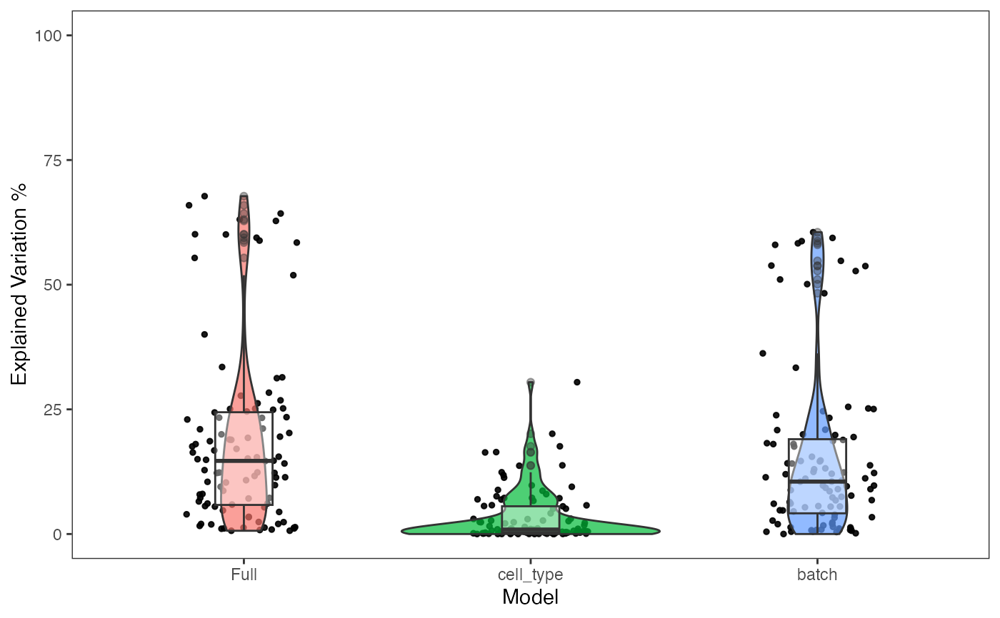

Visualize the percent variation in the data that is explained by batch and condition if it is given.
plotBatchVariance(inSCESet, use_assay = "logcounts", batch, condition = NULL)
| inSCESet | Input SCtkExperiment object. Required |
|---|---|
| use_assay | Indicate which assay to use for PCA. Default is "logcounts" |
| batch | The column in the annotation data that corresponds to batch. Required |
| condition | The column in the annotation data that corresponds to condition. Optional |
A boxplot of variation explained by batch, condition, and batch+condition (if applicable).
if(requireNamespace("bladderbatch", quietly = TRUE)) { library(bladderbatch) data(bladderdata) dat <- as(as(bladderEset, "SummarizedExperiment"), "SCtkExperiment") plotBatchVariance(dat, use_assay="exprs", batch="batch", condition = "cancer") }